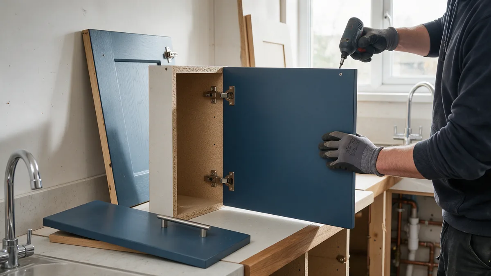

Advice · Sample article
Refresh or replace: when new doors are enough
Half the kitchens we are asked to replace do not need replacing. Here is how to tell which half yours is in.

Generated photoA fair number of the kitchens we are asked to quote for do not need replacing. The doors have dated, a worktop has blown round the sink, the handles are tired, and the whole room reads as old. Underneath all that, the units themselves are often perfectly sound. Knowing which camp yours is in is worth doing before you spend anything, because the two jobs are miles apart in money and in upheaval.
Check the carcasses, not the doors
The doors are what you look at, but the carcasses are what decide it. Open a base unit and have a proper look inside.
- Press the bottom of the unit under the sink. If it is firm and dry, good. If it is soft, swollen or crumbling at the front edge, water has been getting in for a while.
- Push the back panel. It should be solid. If it flexes or has come away from the groove, the unit has lost its squareness.
- Look at the hinge plates. If the screws spin and will not bite, the chipboard round them has given up.
- Stand back and look along the run. If the doors are all over the place and the gaps are uneven, that can be adjustment, or it can be a run that has dropped.
If most of that comes back good, you have a kitchen worth keeping and dressing differently. If two or three units fail, you are into a full replacement, and new doors would only be hanging on something that is already going.
What a refresh actually changes
Doors, drawer fronts, end panels, handles, and usually the worktop. Sometimes the sink and the taps at the same time, because they are the most used things in the room and they date as fast as the doors. Often a new floor. What it does not change is the layout: the sink, the cooker and the appliances stay where they are.
The upside is that it takes days rather than weeks, you keep your kitchen working while it happens, and the money goes on the things you see and touch. The limit is that if the layout is what you hate, no amount of new doors will fix it.
When replacing is the right call
Replace when the carcasses are failing, when you want the sink, the cooker or the appliances in different places, when the room is being opened up or extended, or when the kitchen is so old that nothing will match what you can buy now. Replace too if you have had three leaks under the sink in two years, because something behind the units is wrong and new doors will hide it rather than fix it.
The question to ask yourself
Stand in the doorway and say out loud what annoys you. If the list is about how it looks, a refresh will probably do it. If the list is about where things are, or about what keeps going wrong, it is a new kitchen. Most people know the answer already, they just want somebody to tell them it is allowed.
Whoever you get out, ask them to open a unit and look inside while you watch. Anybody who quotes a full kitchen without doing that is quoting the easy job rather than the right one.
Written for this demo as general guidance. It is not advice on your kitchen, and products and rules change. Check anything that matters with somebody who has seen the room.
More advice
Also worth a read
Ready to get the room measured?
Tell us what you are planning and we will come and measure it up properly.